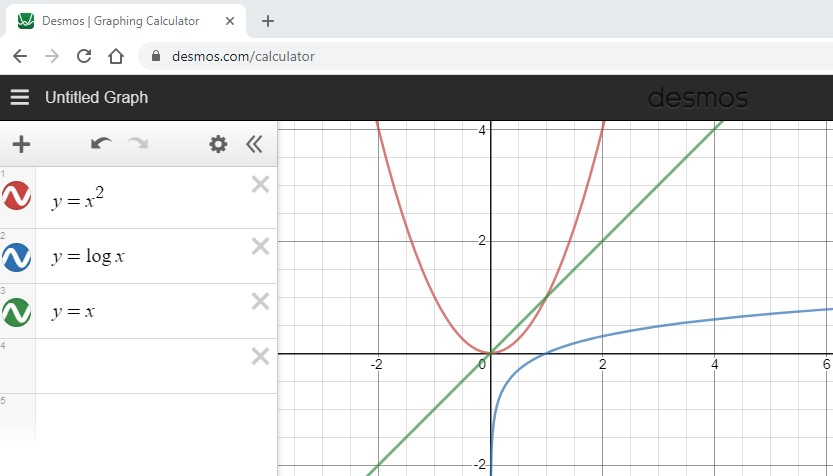
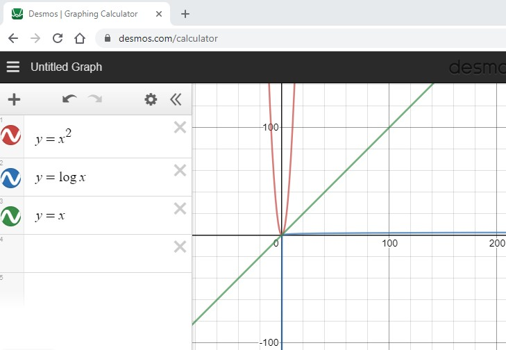

W02 Teach - Part 1 Answer
Question: What is the big O notation for
calc_factorial?Answer: The
calc_factorialfunction has a single for loop. This implies O(n).Question: What is the big O notation for
calc_stats?Answer: The
calc_statsfunction has a single for loop followed by another single for looop. This implies O(n) + O(n) = O(2n). With big O notation, the coefficient is dropped and we can simplify this to be O(n).Question: What is the big O notation for
print_triangle?Answer: The
print_trianglefunction has a for loop within another for loop. The outer for loop is based on the size of the data (in this casesize). The inner for loop is based on the size of the outer loop. During the first iteration of the outer loop, the inner loop will only run 1 time. However, on the last iteration of the outer loop, the inner loop will runsizetimes. Since the inner loop is based on the size (even though its decreasing), this implies O(n^2). To see this better, we can count how many times the inner loop runs. The first time the inner loop runs 1 times, the second time 2 times, and so forth up untilsizetimes. Adding this up we get: 1 + 2 + 3 + ... + (size-1) + (size) =size(size+ 1) / 2 = 0.5*(size^2 +size+ 1). This simplifies down to O(n^2) since lower order exponents and coefficients are dropped with big O notation.Question: What is the big O notation for
display_letters_in_names?Answer: The
display_letters_in_namesfunction has a for loop within another for loop. The outer for loop is based on the size of the data (in this case the number of names in the list). The inner for loop is based on the length of each name and not the size of the data. This implies O(n). Imagine the list of names had 1,000,000 names. The average name size might be less than 10 letters long. This has the affect of running O(10n) which reduces to O(n).Question: What is the big O notation for
average = sum(numbers) / len(numbers)?Answer: The
sumfunction in Python will loop through all the numbers in the list and add them together. This will be O(n). Thelenfunction will return the length of the list (also called a dynamic array). Python does not have to count how many items are in the list because this is remembered everytime an item is added or removed from the list. Thelenfunction has performance of O(1). Therefore, the total cost is O(n).Question: What is the order of O(n^2), O(log n), and O(n) (best performance first and worst performance last)?
Answer: The first graph below shows the 3 graphs displayed for small values of
nand the second graph shows the same 3 graphs zoomed out for larger values ofn. By looking at the graph, O(n^2) is worst performance because it increases faster as the data size increases. In contrast, O(log n) has the best performance because it increases slower as the data size increases. This is seen even more in the second graph where y=x^2 is approaching the y-axis and y=log x is approaching the x-axis. The order is: O(log n), O(n), O(n^2).

